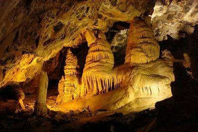

Explore the Caves, Minnetonka, and The Paris Ice Cave
Minnetonka Cave is a fascinating 9-room cave of stalactites, stalagmites and banded travertine that was originally found by grouse hunters. Don't miss one of the most striking stalactites in the cave, called the Bride, known for its lacy appearance. The cave is only accessible after the snow melts. You can visit from June through Labor Day. The road to the cave is paved. There is a guided 90 minute tour, only about a 1.5 miles. It will get chilly so bring a jacket, and be prepared to go up and down 400 steps. Nearby Minnetonka Cave is The Paris Ice Cave. A little less on the spectacular scale vs Minnetonka. The Paris Ice Cave has a brook in the surrounding hills near the cave that runs into the cave resulting in the "ice". Ok let us see if anyone will acutally read this I need a bit more text and I didn't want to make the font bigger and I like to type. Why not is what I say. I have driven to Idaho many times, but not stopped near Bear Lake. My sister has, but she likes to drink so I don't want to go with her.The rest of the article is to be continued....